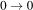
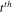
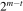

| Word to word | Label-encoded targets | Label-encoded features |
|---|---|---|

|

|

|
(Terence teaches in University of San Francisco's MS in Data Science program. You might know Terence as the creator of the ANTLR parser generator.)
Contents
Recurrent neural networks (RNNs) transform variable-length feature vectors into fixed-length vectors, which is useful because most machine learning models require fixed-sized feature vectors (e.g., the pixels of a 28x28 image or the 10 features of a house for sale). RNNs are, therefore, convenient data preprocessors or model front ends. The key characteristic of the fixed-length vectors generated by RNNs is that they encode information about feature order, which is critical in naturally language processing (NLP) and time series models: “man bites dog” is very different than “dog bites man.” Furthermore, the vectors are learned as part of a regression or classification problem so the vectors are meaningful within the context of that model and training set.
The section lays the groundwork for building and training RNNs using nothing but matrices and vectors, without the metaphor of neural networks. Rather than derive and compute our own partial derivatives, we'll use PyTorch's automatic differentiation to update model parameters during training.
To understand what's going on inside an RNN, let's re-invent the order-sensitive encodings generated by an RNN using a simple classification problem. Imagine that we have three words for cat in three different languages. Given a word, we'd like to classify it as English, French, or German:
| Word to word | Label-encoded targets | Label-encoded features |
|---|---|---|
|
|
|
|
In order to numericalize data before training a model, we can encode the targets as classes 0, 1, and 2, which works great. Unfortunately, we can't convert the cat words to unique integers because we get nonsense like , as shown on the right above.
Instead of a single number per word, we need to come up with a vector of numbers to represent each word. We don't need to know what the vector elements are per se, just that they somehow meaningfully represent a word in some high-dimensional space:

As an analogy, consider the common tactic of breaking apart a single date feature (often represented as the number of seconds since 1970) into a vector of its constituent components like hour, minute, day, month, year.
Once we have these meaningful feature vectors (for cat, chat, and katze), we can use them to train a random forest or any other classifier. So this article is all about how we find suitable vectors. To do that, let's baby step through some possible approaches to arrive at the RNN solution.
The first thing we have to do is split apart the words into a sequence of characters and encode those characters using a character vocabulary. Computing the vocabulary is straightforward. Any unique integers will work for the vocabulary, but the implementation is simpler if we use consecutive integers starting from zero:
| Vocabulary symbols | Words encoded as vectors |
|---|---|

vocab = {c:i for i,c in enumerate("acehktz")}
|

|
Unfortunately, the feature vectors for different cat words have different lengths (three, four, and five). A simple way to convert these variable length character sequences into a single feature is to add up the vocabulary character encodings, which we can do with a trivial loop:
| Character sum encoding loop | Words encoded as integers (sum of chars) |
|---|---|
|
for x in ["cat,"chat","katze"]:
x = [vocab[c] for c in x]
h = 0
for t in range(len(x)):
h = h + x[t]
|

|
This is not a great solution: First, because it's unclear that 6, 9, and 14 meaningfully distinguish between the three cat words. More importantly, though, this encoding is order independent. For example, a-c-t has the same encoding as c-a-t:

A simple way to make the encoding order dependent is to multiply previous h values by, say, 2. This performs a scale and add operation very much like what we'd find in a hash function. Scalar 2 is not some magic number—I just chose it randomly, but it's a value we could learn if we created and optimized a loss function.
| Weighted encoding loop | Order-dependent word integer encoding |
|---|---|
|
for x in ["cat,"chat","katze"]:
x = [vocab[c] for c in x]
h = 0
for t in range(len(x)):
h = 2 * h + x[t]
|

|
That inner loop is equivalent to the following recurrence relation:
The recurrence just says that the value of h at iteration t is twice its previous value plus the encoding of the  character; t moves from 1 to m for m characters in the word. For x = cat we get three values of h beyond our initial value:
With a little bit of replacement to remove ht values on the right-hand side, we find that the final h value is:
The key take away here is that, despite having a constant multiplier of 2, each character encoding is multiplied by a different number, depending on its position in the sequence: xt is multiplied by . This is why cat and act get different encodings. We've solved the order dependency issue, but it's unlikely that a single integer will ever contain enough information to meaningfully represent a natural language word.
As we discussed at the beginning, our goal is really to represent entire words by vectors in some higher dimensional space, not integers, which are 1D vectors. We don't have a proper encoding vector for a word, but we can easily get the one hot vectors for individual characters. So, we just have to find a way to convert these character one hot vectors to a suitable encoding for an entire word. The simplest way to combine the character vectors is to merge them or, equivalently, add them together into a bag of words (BOW), or bag of characters in this case:
| BOW encoding loop | Order-dependent word integer encoding |
|---|---|
|
for x in ["cat,"chat","katze"]:
h = torch.zeros(len(vocab), 1)
for t in range(len(x)):
h = h + onehot(x[t])
|

|
But, BOW vectors do not encode information about the order of the characters and the summation of a bunch of one hot vectors isn't more meaningful than the integer representation.
To combine the character vectors in an order dependent way, we can simply apply the same trick we did before to scale the previous value of h. The only difference between this and the previous version is that we use character vectors not character values and we initialize h to the zero vector rather than 0:
| Weighted BOW encoding loop | Order-dependent word integer encoding |
|---|---|
|
for x in ["cat,"chat","katze"]:
h = torch.zeros(len(vocab), 1)
for t in range(len(x)):
h = 2 * h + onehot(x[t])
|

|
Turning the crank three times yields  as our encoding for cat. Again, multiplying by 2 is nonsense, but the bigger issue is that multiplying by a single scalar is unlikely create a word encoding meaningful enough to distinguish these words properly.
as our encoding for cat. Again, multiplying by 2 is nonsense, but the bigger issue is that multiplying by a single scalar is unlikely create a word encoding meaningful enough to distinguish these words properly.
To make a more sophisticated model, we need to multiply the h vector by a matrix W (@ is the matrix multiply operator), which represents many more model parameters than a lonely scalar value. There are multiple useful interpretations of matrix-vector multiplication, but it makes the most sense in this case to think of matrix-vector multiplication as transforming a vector into a new space (possibly with different dimensionality). Let's start with the identity matrix as the transformation matrix to see what it looks like:
| Matrix transform BOW encoding loop | Order-dependent word integer encoding |
|---|---|
|
nfeatures = len(vocab)
W = torch.eye(nfeatures, nfeatures)
h = torch.zeros(nfeatures, 1)
for x in ["cat,"chat","katze"]:
h = torch.zeros(len(vocab), 1)
for t in range(len(x)):
h = W @ h + onehot(x[t])
|

|
(Section Using identity vectors to sum word embeddings in Trask Chapter 12 is a nice section on this topic.)
Because multiplying a vector by the identity matrix leaves the vector as-is, the update equation reduces to h = h + onehot(c). That h update equation leads to a BOW word encoding because it just sums up the character one hot vectors.
So W can start as the identity or random values, but we need to learn appropriate values for the elements of that matrix. In order to do that, the computation shown here must be part of a classification problem. The W elements we learn will be appropriate for the specific classification problem, although often they are useful for transfer learning purposes. For example, I often use the GloVe word vectors from Stanford as a starting point to encode words as vectors.
There's one more issue to deal with that makes our update equation a bit more complicated: As it is now, the dimensions of W must be the same size as the vocabulary, which could be in the hundreds of thousands, if we were dealing with words not characters. If the vocabulary were 100,000, W would have 10 billion elements, which would require 40GB on a CPU or GPU using 32-bit floating-point numbers. We'd prefer a much smaller W, on the order of 100 x 100, depending on the problem.
To decouple the size of W from the vocabulary size, let's introduce another matrix, U, that transforms the xt's sparse one hot vector from the size of the vocabulary to a dense vector of length nhidden. I've chosen nhidden to be four here to keep the diagrams small and because we have such a small training set to learn:
| Matrix transform BOW encoding loop | Order-dependent word integer encoding |
|---|---|
|
nhidden=4; nfeatures=len(vocab)
W = torch.eye(nhidden, nhidden)
U = torch.randn(nhidden, nfeatures)
for x in ["cat,"chat","katze"]:
h = torch.zeros(nhidden, 1)
for t in range(len(x)):
h = W @ h + U @ onehot(x[t])
|

|
(Matrices W, U are called Whh, Wxh in Karpathy's article and h_h, i_h in Chapter 12 of the fastai book.)
By transforming xt's one hot vector into a smaller dense vector using U, the W matrix can be as small or big as we want. The cool thing is that the U matrix acts like an embedding layer for a neural network. Multiplying U times the xt's one hot vector effectively selects a column from U. So, the columns of U are the character vector embeddings after we train a model containing this h update equation.
As before with the scalar BOW encoding loop, if W is the identity, then we are just adding up vector representations of the input characters. In this case, however, we would not be summing up the one hot representations. Instead, we'd be summing up the embeddings for xt, which gives us a continuous bag of words (CBOW), not a BOW. CBOW simply means an aggregate of multiple symbol vectors that does not encode symbol order information.
It's easier to internalize this loop if we unroll it and watch it in action to see how the h partial results vectors get computed:

Notice that W and U do not change as we compute the h partial results vector for a word. That's an important point, and we'll discuss how and when those matrices change below.
There's one more detail we need in the transformation loop. We can't just sum up the h partial results. Each h has to pass through a nonlinearity first, which will ultimately increase the predictive strength of the model but also ensures h stays within -1..1:
(The fastai book uses relu not tanh but that caused my h vectors to explode in magnitude. I don't think it has anything to do with exploding gradients because I'm under the impression that tanh suffers from vanishing gradients not exploding. I guess this due to a lack of L2 weight decay regularization in my training loop. Karpathy's snippet also uses tanh.)
The h computed by the inner loop yields an embedding vector for each word, computed from the sequence of character one hot vectors for that word. That is just a representation of a word, which we could use in a random forest or any other classifier to make predictions (given suitable W and U). To learn the values in W and U, though, we have to make the matrices part of a classifier model. Given a suitable loss function, we can tweak the values of W and U in the direction of lower loss, yielding more and more accurate predictions.
To make a prediction from word vector h, we again use a matrix transformation that represents either a final linear layer of a neural network or a multi-class logistic regressor, depending on your preference. We transform h to a vector of length 3 because there are 3 target languages: English, French, and German. We'll use a new matrix, V, to transform the final h to the output of our classifier model. The last two lines of this code snippet represent the classifier:
| Matrix transform BOW encoding loop | Order-dependent word integer encoding |
|---|---|
|
nhidden=4; nfeatures=len(vocab); nclasses=3
W = torch.eye(nhidden, nhidden)
U = torch.randn(nhidden, nfeatures)
V = torch.randn(nclasses, nfeatures)
for x in ["cat,"chat","katze"]:
h = torch.zeros(nhidden, 1)
for t in range(len(x)):
h = W @ h + U @ onehot(x[t])
h = torch.tanh(h)
o = V @ h # Get non-normalized scores
o = softmax(o) # Normalize to sum to 1.0
|

|
(This code corresponds to models RNN in Karpathy LMModel2 in chapter 12 of the fastai book.)
We also should shuffle the X training data rather than go through it in the same order each epoch.
The loop that we have so far can make predictions for every record in our training set, but it does not learn. It just keeps repeating the same predictions over and over because W, U, and V do not change. In order to improve predictions and get better word vectors, our training loop has to update W, U, and V, which we can do with stochastic gradient descent (SGD). SGD has lots of variations, but the stochastic part comes from the fact that we are updating the model parameters after making a prediction from one (or just a few) records. Let's add the computation of our loss function and pseudocode to update our matrices:
| RNN training loop | Animation |
|---|---|
|
init W, U, V
for i in range(0, len(X)):
x = X[i]
h = torch.zeros(nhidden, 1)
for t in range(len(x)):
h = W@h + U@onehot(x[t])
h = torch.relu(h)
o = V@h
o = softmax(o)
loss = cross_entropy(o, y[i])
update W,U,V towards lower loss
|
In PyTorch, the update pseudocode line would look something like:
where optimizer is an Adam or RMSProp optimizer, for example.
At this point, we've created an RNN that uses SGD to update W, U, V after each input record. You can check out the full implementation in the SGD notebook. What we have is a good training procedure, but is very inefficient because computing the partial derivatives during back propagation is very expensive, and we do it after each record. To improve performance without sacrificing much in training accuracy, we can train a small batch of records before updating the matrices. That's called minibatch SGD, and is the subject of the next section.